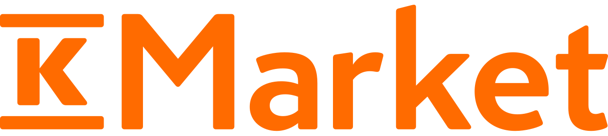

Three largest groups and their brands
-
S Group / SOK
"S Group operates in the supermarket trade, the department store and specialty store trade, the fuels retail and service stations and the travel industry and hospitality business. Some regional cooperatives also engage in car dealership, car accessory, and hardware trade."
-
Prisma
The largest one. They call themself as hypermarket and provide you with daily food and weekend treats at the lowe prices. Their wide selection also covers family and home supplies.
-
S-kaupat / S-market
This is the most common S Group's grocery store you see. It provides you daily needs.
-
Sale and Alepa
These two brands are more likely convenient store. Some of them open 24 hours.
-
-
K Group / Kesko
"K Group is the second biggest grocery trade operator in Finland."
-
K-Citymarket
K-Citymarket is a modern, Finnish hypermarket that offers its customers extensive selections of food and home and speciality goods.
-
K-Supermarket
K-Supermarkets are better than standard food stores which always provide their customers with the season's best raw materials and ideas for cooking both every day and on special occasions.
-
K-Market

-
-
Lidl
"Lidl's operations are based on a clear and simple concept that enables the best quality and low prices to be combined."
You want a good price?
If you are not sensetive of price, just go to a grocery you like. If you want to save some money, you have to become a member of each group.
-
For S Group
Becoming a customer owner , you will earn cash back based on your spent, up to 5%. You earn extra 0.5% when you pay with S-Etukortti Visa which is your debit card with S-pankki.
* To do that, you have to open an bank account at S-pankki and pay 100€ for becoming a customer owner. This fund could be returned to you after you cancel your membership. You will receive a temporary card before Visa card. There is no extra 0.5% with this temporary card.
more benefits -
For K Group
Joining K-Plussa , you will get personallized offer every week.
In addition, if you are a higher education student you will get up to 5% cashback on your grocery purchuses.
more benefits -
For Lidl
Registering for a Lidl Plus customer through your mobile Lidl Plus app, you will get cheaper price for some items.